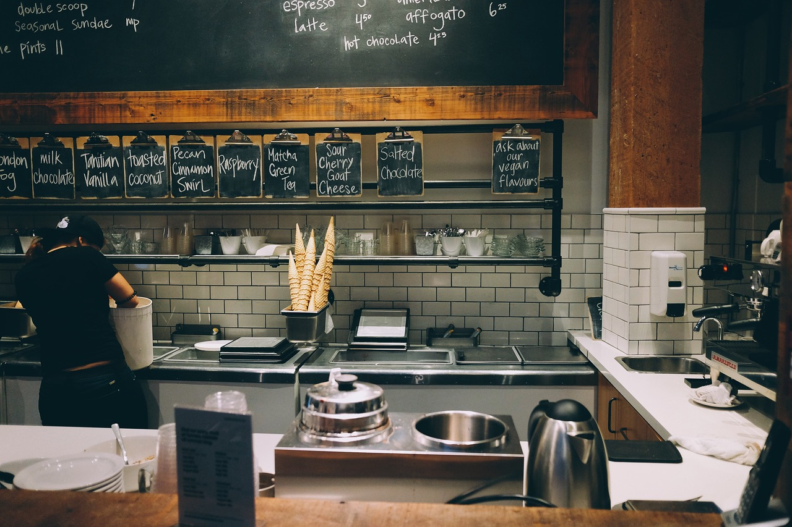
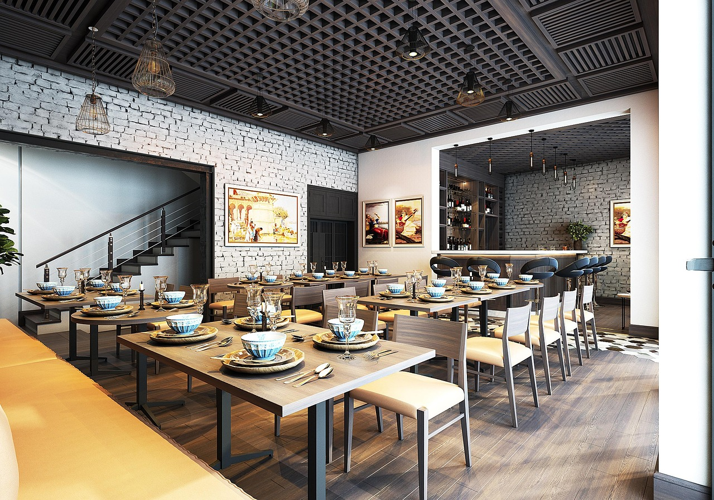
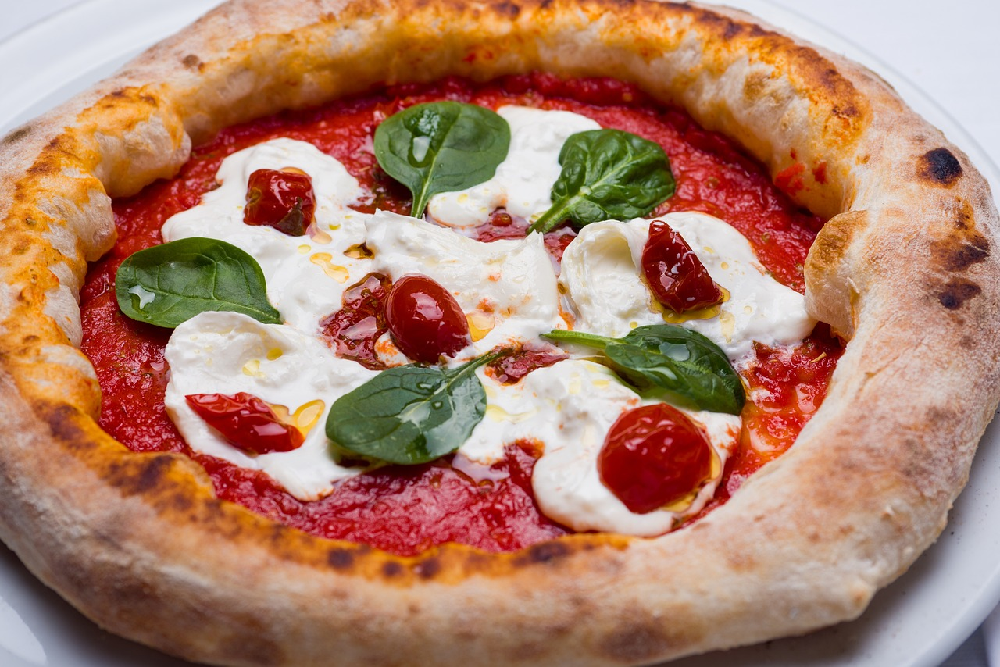

石窯で焼いた本格ピザが味わえる
県内屈指のピッツェリア

news
2025.5.5 臨時休業のお知らせ
PIZZERIA
IN AKITA


LUNCH MENU
火のぬくもりとワインで、

DINNER MENU


IN AKITA
About
お店について
一枚のピザに、出会いの物語を
当店のピザはただのピザではありません。 イタリア産の00番粉に国産小麦をほんの少しブレンドし、72時間かけて丁寧に低温熟成。 もっちりとしながらも、口の中ではふんわりと香りが広がります。 トマトソースは完熟トマトを潰すところから始まり、ハーブとオリーブオイルでゆっくり煮込みます。 ひと口食べるたびに、素材の優しさと職人の真心が感じられる── そんな「記憶に残るピザ」を、今日も一枚ずつ焼き上げています。


木と石に包まれた店内は、昼は明るくカジュアルに、夜はしっとり大人の雰囲気に。 窯のぬくもりを感じながら、ゆっくりと食事を楽しめます。
ナポリ直送の薪窯で一気に焼き上げる高温ピザ。 外は香ばしく、中はもっちり。香りと音もごちそうのひとつです。
ランチタイムは「焼きたて」と「手軽さ」のバランスにこだわりました。
人気のピザにサラダやスープをセットにして、気軽に本格ナポリ気分。 明るく開放的な店内で、おしゃべりとチーズがとろけるひとときを。
テイクアウトにも対応しており、お昼休みの“ごほうび”にもぴったりです。
DINNER
火のぬくもりとワインで、
夜が深まる
ディナーは、ゆったりとした時間を味わう空間。
前菜、サラダ、薪窯で焼くアツアツのピザに、自然派ワインやクラフトビールを添えて。
カウンターで職人の手さばきを眺めるもよし、テーブルで語らうもよし。
特別な日にも、何気ない一日にも似合う、そんな夜を演出します。
GALLERY
お店の日常と癒しの時間をお届け

LOCATION
| 店名 | Trattoria Pizzica（トラットリア・ピッツィカ） |
|---|---|
| 電話番号 | 0123-45-6789 |
| 住所 | 秋田県秋田市秋田ショッピングセンター内B1F JR「秋田駅」より徒歩1分 |
| 営業時間 | 10：00～21：00（不定休） |
| 席数 | 17席（テーブル7卓） |
| 駐車場 | 有 |